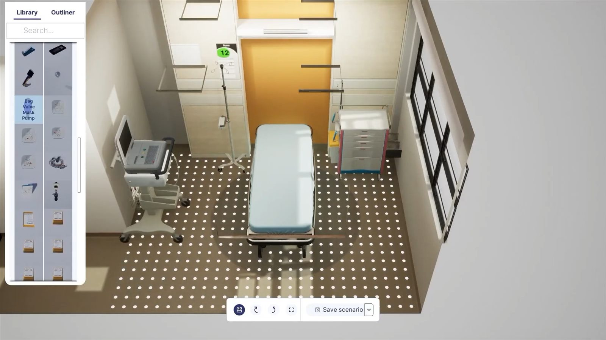
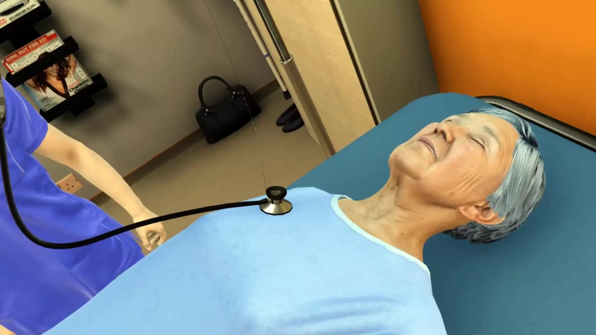
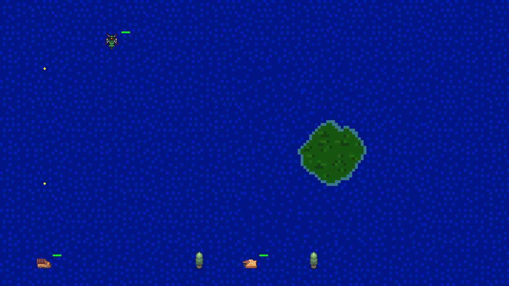
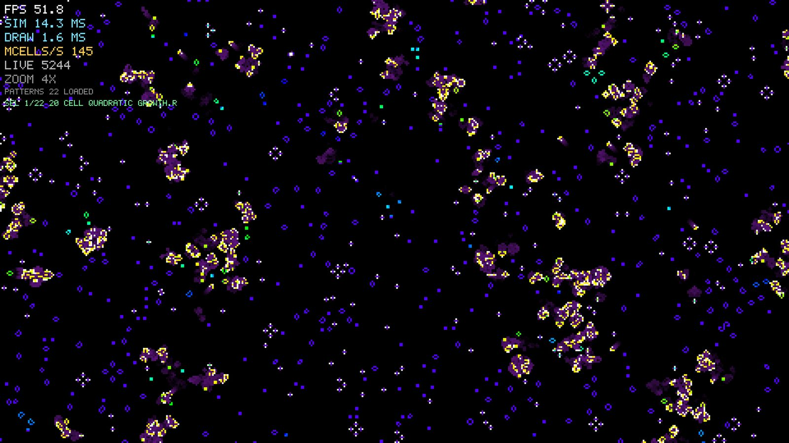
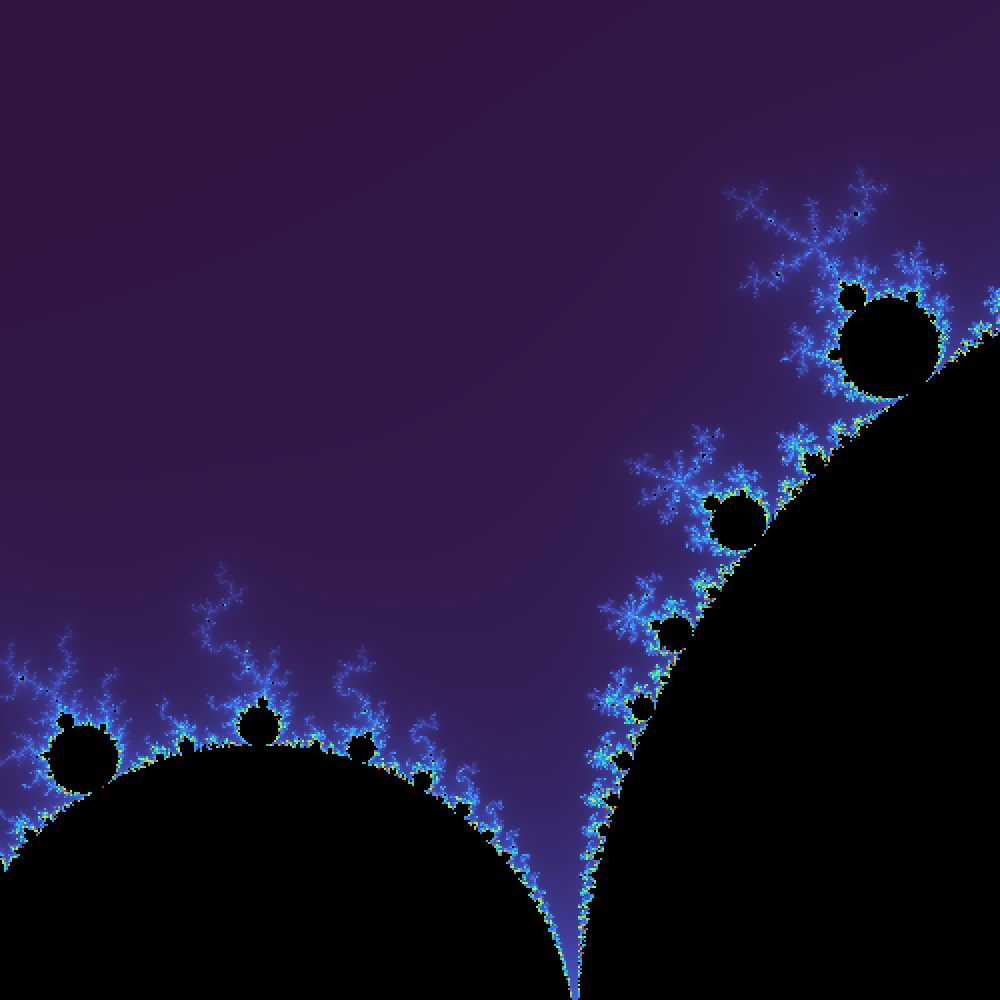
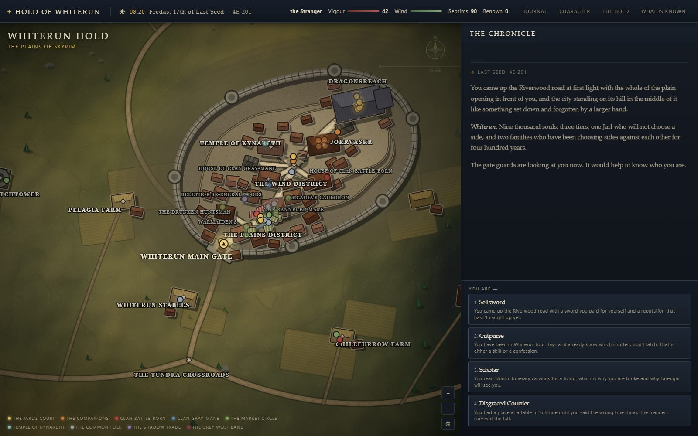
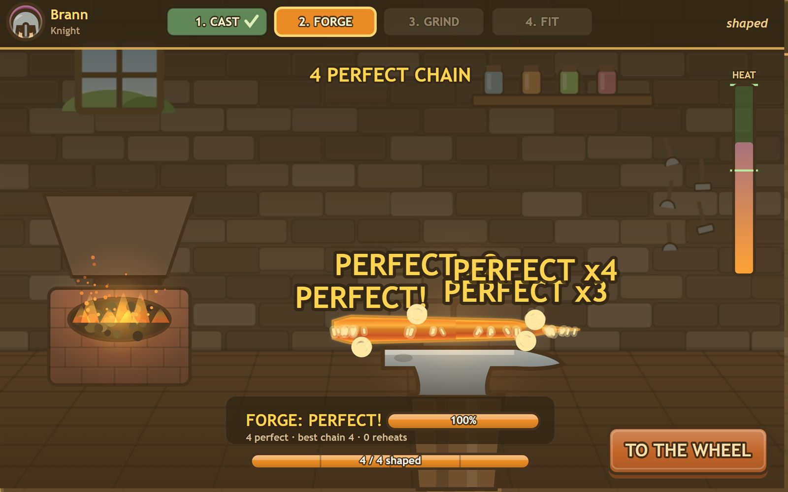
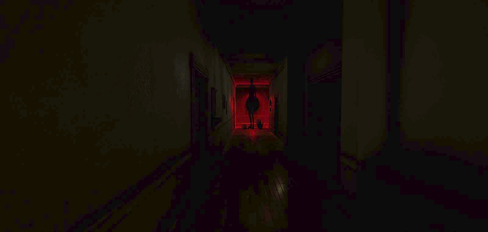
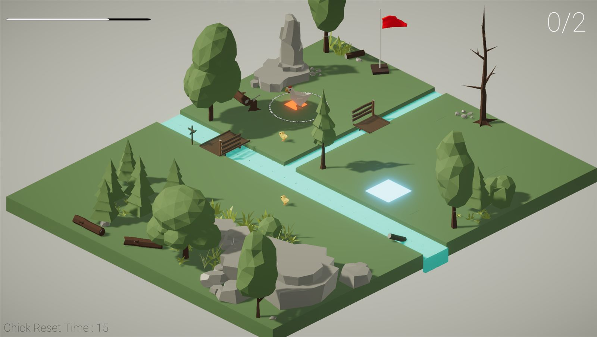

Projects
Work projects
Project Greenleaf
A Total War style strategy game. I lead the battle and overworld layers: 4,000 individually simulated soldiers on Mass Entity, an MVVM UI framework, A* formation navigation, and a settlement economy.

SimGym
A medical training simulator on Quest 2, Quest 3 and PC VR. I built the scenario and patient designer: set the case, filter the metahuman patient, dress the room, and never file a ticket with engineering.
ENT Surgery VR
A surgical training simulator. I built the ffmpeg session recorder with multi-session management, plus the analytics and instructor grading layer that turned practice into assessment.

ResusVR
A resuscitation training simulator. VR interaction systems, scoring computed by querying a SQLite event log, and localisation that changes the procedure and not just the words.
Personal projects

Benji-2D
A 2D engine written from scratch in C++ and SDL2. Signature-based ECS with packed component pools, an event bus keyed on type, thirteen systems and an ImGui debug layer.

automata-engine
Two million cells simulated and drawn every frame, with the cost of both on screen. Version one of four, each a rewrite of the same inner loop, benchmarked the same way.

Mandelbrot
A set viewer in one file. Smooth escape time colouring instead of banding, and a zoom that holds the point under the cursor so you can explore rather than chase.

Hold of Whiterun
42 NPCs with schedules and opinions. What you do becomes a fact seeded into whoever saw it, and the fact spreads through the hold on its own until it reaches the watch.
Knight
An action RPG on GAS, structured after Lyra: abilities granted from a data asset on possession, input bound by gameplay tag. In progress, and the page says what is and is not built.

Blacksmith
A forge game with no asset files. One mould silhouette drives the pour, the anvil, the grindstone and the battlefield, so a bad cast is visibly a thinner blade.
BossFightKit
Three Hollow Knight boss fights rebuilt as data: attacks, phases, arenas and tuning are all ScriptableObjects, plus the editor tools that scaffold a fight and validate it before it fails silently.

Cartino
A 3D bullet hell where you drive. Built for Android, and the first thing I made where the structure was a decision rather than whatever the tutorial did.

Horror Game Demo
A story horror demo that never leaves one house, structured after Edith Finch: the house is the level, each room is a chapter, and the lighting does the frightening.

Koi
A jam puzzle game on the theme Reset. Chicks follow you only inside your circle, and the one order you can give them sends them back to where they started.